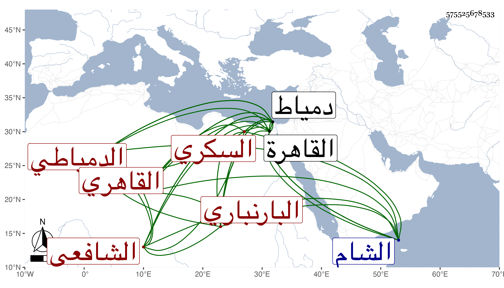

0902Sakhawi.DawLamic.ITO20230111-ara1.EIS1600.575525678533
Biography ID: 575525678533
731
محمد بن عبد الرحمن بن أحمد بن عباس بن أحمد بن عباس الشمس البارنباري الأصل الدمياطي ثم القاهري الشافعي السكري ويعرف بابن سولة وهو لقب جده لكونه رام أن يقول سوسة فسبق لسانه لسولة فجرت عليه . ولد في شوال سنة إحدى وعشرين وثمانمائة بدمياط ونشأ بها فحفظ القرآن وصلى به بجامع المنزلة والحاوي وجمع الجوامع وألفية ابن ملك ، وانتفع بالشمس بن الفقيه حسن في ذلك وغيره وأخذ في الفقه بدمياط عن النور المناوي وعبد الرحمن الحضرمي وفي العربية عن أحمد اللجائي والشمس محمد البخاري وفي العروض والبديع عن ابن سويدان ، وقدم القاهرة في سنة إحدى وأربعين فلازم أحمد الخواص في الفقه والعربية والفرائض والحساب وغيرها وأخذ في الفقه أيضا عن السيد النسابة وفي الفرائض عن ابن المجدي وحضر أيضا دروس الونائي وكذا القاياتي لكن قليلا ثم لازم المناوي في الفقه وأخذ عنه الحاوي وغيره وقرأ على ابن إمام الكاملية في الأصول ، وتميز وشارك في الفضائل وأقرأ الطلبة بل شرح الروض لابن المقري واختصره وشرحه وعمل مقدمة في النحو وشرحها ، وربما أفتى مع عدم مزاحمته في وظائف الفقهاء بل يتكسب بمعاناة طبخ السكر وتوابعه ، وعرض عليه الزين زكريا قضاء دمياط فأبى وقبل عنه مجرد القضاء ولكن لم يتصد لذلك بل ما أظنه باشر إلا القليل . وهو ممن وافقه في الطلب في بعض الدروس ، وحج في سنة خمسين وسمع على أبي الفتح المراغي والتقي بن فهد ثم في سنة سبعين كلاهما في البحر وجاور ولقي في الأولى أبا الفضل المغربي فحضر عنده في الأصول قليلا ، وكذا دخل الشام في التجارة سنة أربع وأربعين وحضر دروس التقي بن قاضي شهبة وسمع الحديث قليلا على بعض المتأخرين بل قال لي أنه سمع على شيخنا في الحلية بقراءة البقاعي وحضر عندي بعض الدروس ، وكان مديما للتلاوة مقبلا على شأنه والناس منه في راحة مع تعبه من قبل ولده بل بنتيه . مات بعد تعلل طويل في يوم الثلاثاء ثالث عشر المحرم سنة اثنتين وتسعين وصلى عليه من الغد ودفن بصوفية سعيد السعداء رحمه الله وإيانا .
